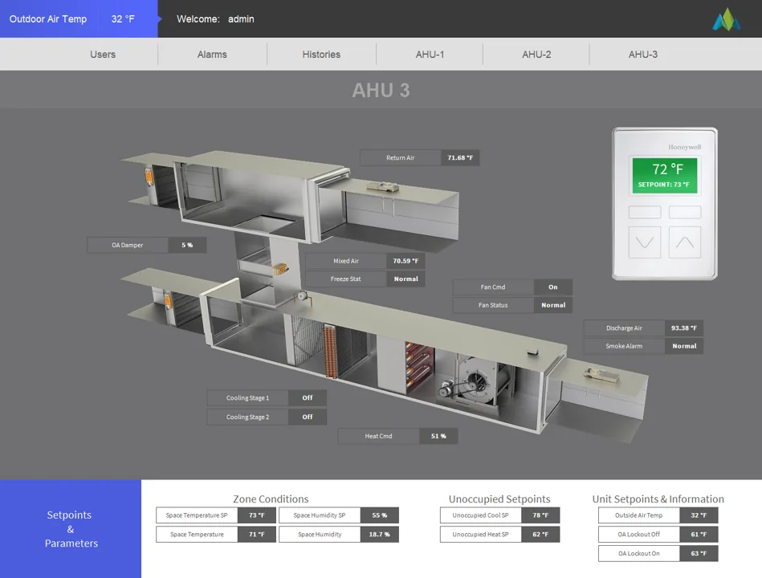
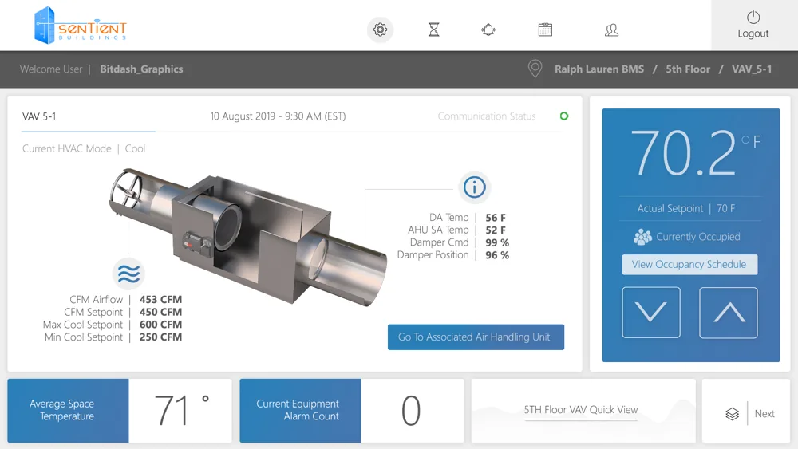
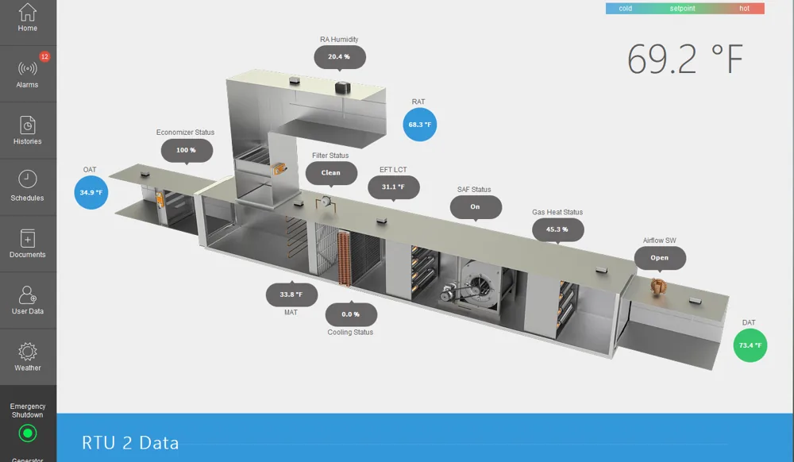
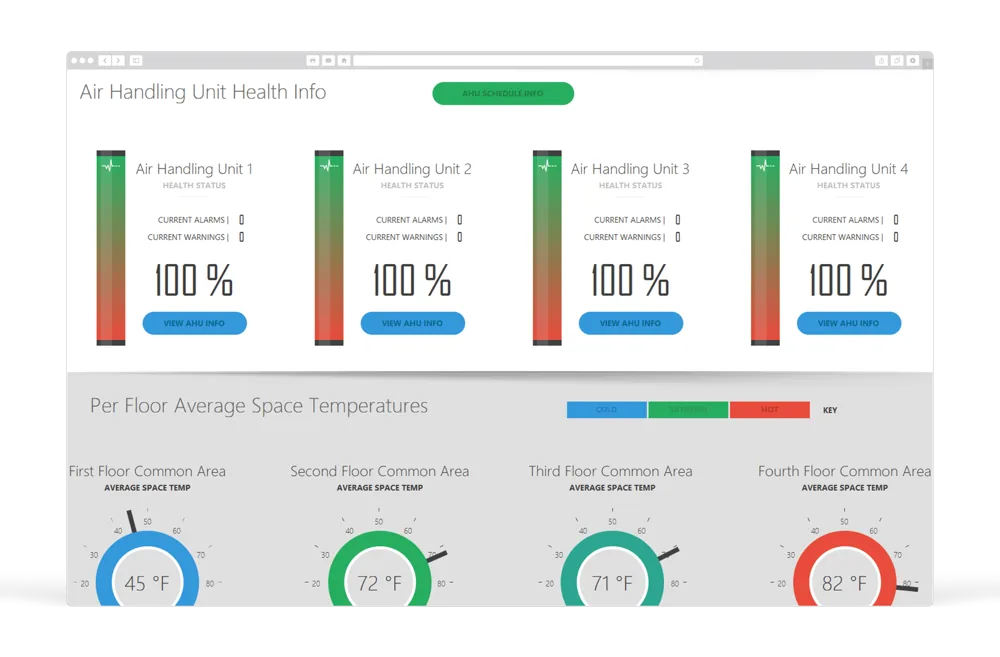
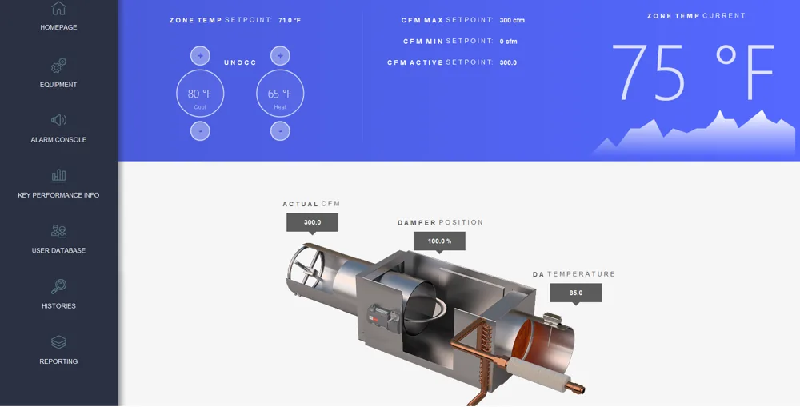
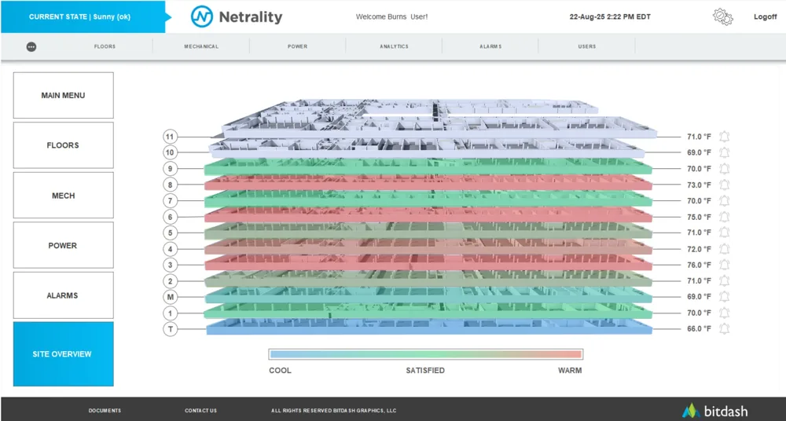
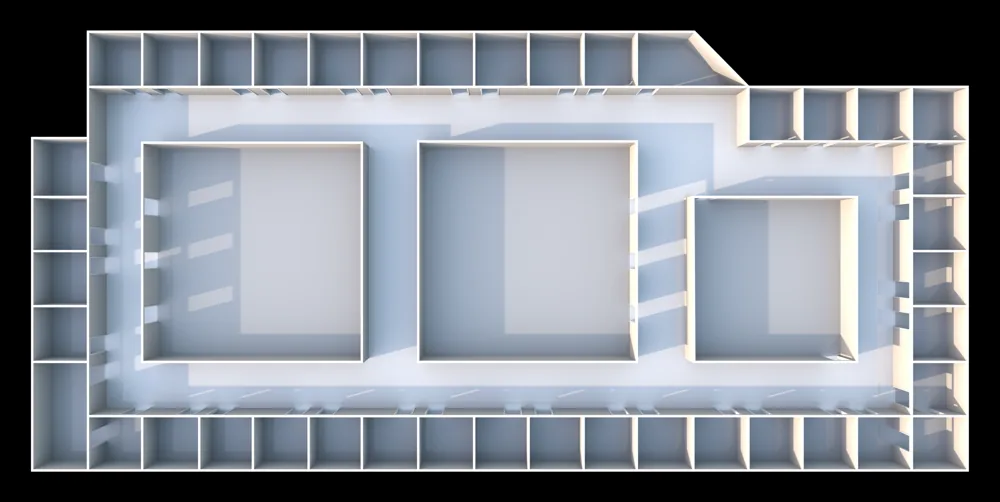
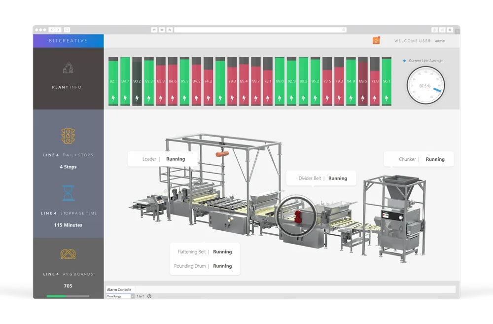

What do you need
to move forward?
Choose a discipline. Explore the scope. Bring us into your team.

↗DESIGN & PLAN
Controls engineering
Drawings · I/O · Wiring

↗DESIGN & PLAN
Sequences of operation
Modes · Interlocks · Test criteria

↗PROGRAM & VISUALIZE
Programming & integration
Logic · Integration · Databases

↗VERIFY & IMPROVE
Analytics & optimization
Trends · Findings · Reporting

↗VERIFY & IMPROVE
Remote commissioning
Point checks · Testing · Closeout

↗DESIGN & PLAN
Project support
Coordination · Reviews · Handover

↗PROGRAM & VISUALIZE
Graphics & visualization
Equipment · Floors · Dashboards

↗VERIFY & IMPROVE
Lifecycle & modernization
Assessment · Migration · Support
8 services
LET’S WORK TOGETHER
Start a conversation ↗